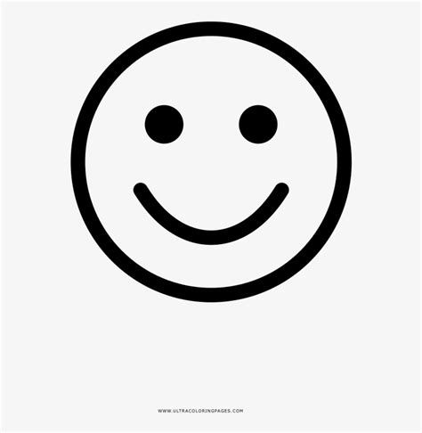

Opinion Personal:
En mi opinion como creadora e aprendido muchisimo en este parcial, ya que e logrado hacer multiples herramientas, aprendiendo acodigos que me ayudan para la creacion base de una pagina web, siento que devo mejorar mucho mas, pero considero que para ser una de mis primeras paginas web etsa bien. Anunque uviera preferido poder tener mas tiempo para trabajar en algunos detalles mas para que estuviera mucho mas completa y tuviera mas informacion sobre mi tema que redacte.
Aun haci me quedo muy sadisfecha de mi trabajo conseguido, esperemos y mas adelante pueda seguir aprendiendo, y mejorando todos los errores que e cometido en la creacion de paginas web.
